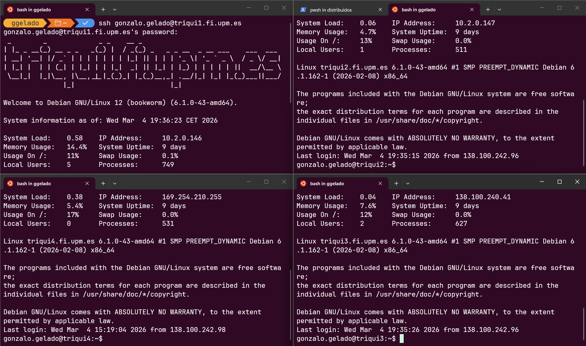
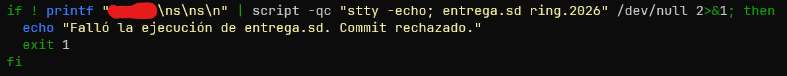

Sin pegarse un tiro ni pegarselo a nadie. Documento en redacción, revisa última versión.
Marzo 2026
Este documento está en redacción, cada cambio actualiza los ficheros en esos enlaces.
Consulta regularmente la última versión en esos enlaces.
Va de que los 4 nodos de triqui (p.ej.) hablen entre ellos, se manden ficheritos, mensajitos y demás, pero que ninguno sea un servidor, TODOS SON SERVIDORES Y CLIENTES.
Eso es el P2P (lo que se hacía hace años con los torrents ilegales).
Ya lo iremos definiendo sobre la marcha.
Entorno linux:
WSL
Máquina Virtual
Linux nativo
¿Triqui? ¿Escritorios virtuales? (si tu paciencia y cordura lo permiten)
Conexión con triqui
Usar el Gestor de Entregas de Triqui (ya explicaré cómo funciona)
Coge un editor cómodo (vas a dedicarle un ratito)
VSCode
CLion
¿Nano? ¿vi? ¿emacs?
2- Pon tu entorno de trabajo
3- Enciende la VPN
Recuerda: Ya sabes que copiar texto de un PDF a una terminal puede hacer cosas raras.
Saltos de línea que no debes poner, caracteres raros, comillas… Ten cuidado al copiar y revisa bien. En algunas diapositivas se divide el texto en 2 líneas para que no se corte, eso no significa que en tu terminal deban ser 2 líneas.
Ejecuta en una terminal
wget https://laurel.datsi.fi.upm.es/_media/docencia/asignaturas
/sd/ring-2026.tgz
# 2 líneas para que no se corte
tar xvfz ring-2026.tgz
cd DATSI/SSDD/ring.2026/src/De una
Vas a pasar muchas veces ficheros de triqui a tu ordenador y viceversa, puedes hacer SCP todo el rato, pero vas a deprimirte.
Bitvise (Mi preferido para Windows)
O si no…
scp ficheroOrigen usuario@triqui.fi.upm.es:
~/DATSI/SSDD/ring.2026/src/
# 2 líneas para que no se corteUsa esos programas, por favor, te salvan la vida.
(Los nombres son enlaces, puedes hacer click en ellos)
Funciona igual que en SSOO:
ADVERTENCIA: Por alguna razón el Gestor espera que
los ficheros estén en ~/DATSI/SSDD/ring.2026/ pero los
profes han puesto el código de la plantilla en todoEso/src,
por lo que falla. Saca los ficheros de src y llévalos a
esa carpeta.
Con Bitvise y demás es sencilla la operación.
Cada vez que queramos hacer una entrega:
Entrar en triqui
Poner DONDE SEA (en una terminal):
entrega.sd ring.2026
Introducir el número de matrícula cuando se solicite
El corrector corre cada 3h y manda un correo
ring_cln.c
ring_srv.c
common.c
include/common.h
Y ya está, el resto de ficheros se miran pero no se tocan.
Pues por el principio.
No empieces a leerte todo el enunciado, vamos por partes:
/* CLIENTE */
// Conectamos con server
int s = create_socket_cln(remote_ip, remote_port);
// Si hay error retornar algo que no sea cero
if (s < 0) return ERROR;
char op_code = OPERACION; // char, int...
if (send(s, &op_code, sizeof(char), 0) != sizeof(char)) {
perror("mensaje_error");
close(s);
return ERROR;
}
// Después a enviar y recibir datos
// y demás con send y recvswitch (cod_operacion) {
case EL_QUE_SEA: {
// Tramito operacion
// Con recv recibo datos adicionales
// Con send envío respuestas
break;// inicia el nodo añadiéndolo a la red P2P si ya está creada;
// los puertos e IPs deben estar en formato de red;
// debe devolver en el último parámetro el puerto reservado
// ¡¡¡OJO A ESTO ÚLTIMO!!!: en formato red;
// retorna 0 si OK y -1 si error
int ring_init(const char *shared_dir, unsigned int local_ip,
unsigned int remote_ip, unsigned short remote_port,
unsigned short *alloc_port);
// función local que devuelve la IP y el puerto del nodo
int ring_self(unsigned int *ip, unsigned short *port);Vamos con el fichero ring_cln.c.
Objetivo:
Nos dan esto
// inicia el nodo añadiéndolo a la red P2P si ya está creada;
// los puertos e IPs deben estar en formato de red;
// debe devolver en el último parámetro el puerto reservado en formato red;
// retorna 0 si OK y -1 si error
int ring_init(const char *shrd_dir, unsigned int local_ip, unsigned int remote_ip, unsigned short remote_port, unsigned short *alloc_port) {
if (initialize()) return -1; // ya está inicializada
return 0;
}Hay params de salida (punteros):
unsigned short *alloc_port es de
salidaPues vamos a hacer eso, eso es sencillo.
Variable arriba y listo:
shared_dir_copia = strdup(shrd_dir);
ip_copia = local_ip;strdup para copiar los Strings.
ring_self a partir de ella.ring_self devuelve los datos propios.
int ring_self(unsigned int *ip, unsigned short *port)Son parámetros de salida (punteros), ya sabes cómo va
if (!is_initialized()) return -1; // no está inicializada
*ip = ip_copia;
// *port = port_copia; // ni caso, ya lo veremos
return 0;Recuerda: Self. Retornamos la PROPIA, no la remota.
¿Qué ejemplo?
Pues este
int main(int argc, char *argv[]) {
int s, s_conec;
unsigned int addr_size;
unsigned short port;
struct sockaddr_in clnt_addr;
// inicializa el socket y lo prepara para aceptar conexiones
if ((s=create_socket_srv(&port)) < 0) return 1;
printf("Reservado el puerto %d\n", ntohs(port));Ejemplo: server.c
if ((s=create_socket_srv(&port_copia)) < 0) return 1;(por cierto, ya tenemos el valor de retorno de
*alloc_port)
Ya podemos completar en ring_self
(además, recuerda que tienes que guardar ese puerto en alguna variable)
¿Cómo? ¿Qué pone ahí?
Poco a poco, no nos asustemos:
Vamos a buscar el ejemplo ese que dice, a ver si vemos algo.
Por cierto, ahí te lo dice pero… es en ring_srv.c.
while(1) {
addr_size=sizeof(clnt_addr);
// acepta la conexión
if ((s_conec=accept(s, (struct sockaddr *)&clnt_addr, &addr_size))<0){
perror("error en accept"); close(s); return 0;
}
printf("conectado cliente con ip %s y puerto %u\n",
inet_ntoa(clnt_addr.sin_addr), ntohs(clnt_addr.sin_port));
// crea el thread de servicio pasándole el argumento por valor
create_thread(request_handler, (void *)(long)s_conec);
}
close(s); // cierra el socket generalPues ya sabes, A COPIAR SIN PIEDAD
PD: Lo de formato de red se encargan inet_ntoa y
ntohs (esto es de SSOO, pero no hace falta, tú copia y no
preguntes).
create_thread(create_thread(request_handlercreate_thread(request_handler, (void *)(long)s_conec);Si es que es calcado, literalmente, COPIA LO QUE VIENE EN EL EJEMPLO.
// función para el thread que implementa la funcionalidad de servidor
// debe recibir como argumento el socket de servicio
void *server_thread(void *arg){
return NULL;
}y a hacer lo mismo.
Acuerdate de dar de alta variables y demás para que compile, y que en
vez de retornar 0 retornamos NULL (es void), PERO EL RESTO
IGUAL.
mkdir dir1 && ./ring dir1En otra terminal:
ss -tap | grep <puerto>
# debe aparecer LISTEN con el PID de ringObjetivo: que un nodo le pregunte el PID a otro.
Sin parámetros de entrada, devuelve un int.
Antes de enviar nada hay que decirle al servidor qué quieres. Opciones:
'P'0"GETPID"El char y el entero son los más cómodos para
switch (en C no podemos hacerlo con un string).
ring_remote_pidchar op = 'P';
send(s, &op, sizeof(char), 0); # ¿algún flag?
int pid;
recv(s, &pid, sizeof(int), MSG_WAITALL);
close(s);
return ntohl(pid);char op;
recv(soc, &op, sizeof(char), MSG_WAITALL);
switch(op) {
case 'P': {
int pid = htonl(getpid());
write(soc, &pid, sizeof(int));
break;
}
}
close(soc);
return NULL;./ring dir1
# pulsa P, introduce la IP y puerto del propio nodoPID 2576024Debe coincidir con el PID del mensaje de bienvenida.
Ahora ya hay que ir soltándose un poco, ya no puedo darte todo el código.
¿Quién es el sucesor?: Si soy el primero, pues yo mismo.
¿Y si no? Pues se lo pregunto al nodo al que me conecto.
Nueva operación en el servidor.
Le envío los datos del sucesor actual que tenga guardado este nodo.
// función local que devuelve la IP y el puerto del nodo sucesor;
// retorna 0 si OK y -1 si error
int ring_successor(unsigned int *ip, unsigned short *port) {Es un getter, si has hecho el anterior, este es
TRIVIAL (como odio esa palabra).
Pero si ya lo hemos hecho. Venga, vamos a seguir.
El objetivo de esta segunda operación remota es incorporar una operación que devuelva la dirección IP y puerto de un nodo, de manera que, más adelante, nos sirva de base para la operación lookup, que devuelve esa misma información.
Similar a la primera operación remota, que obtenía el PID del proceso remoto especificado, pero, en este caso, recibe la información (IP y puerto) del sucesor de dicho nodo, en vez de un entero con el PID. Ese código hay que incorporarlo en la función get_remote_successor y en la parte servidora.
Traducción: Cuando nos pidan el sucesor devolver el
actual. Más o menos lo que hemos hecho en la operación de servidor con
ring_init. Desde el servidor recibimos la petición y le
mandamos el sucesor.
Traducción: Le pregunto a mi sucesor cuál es su sucesor con la op. del aptdo. anterior, y cuando me conteste le contesto al cliente con lo que me diga.
Ya has hecho las anteriores fases, ahora ya no te puedo guiar tanto, pero Costoya, que es un grande, ya lo ha hecho:
copy_read_mmap.c
Literalmente ahí viene hecho para el cliente, y
copy_sendfile.c para el servidor.
Esto es como si fuera recursividad: Le pregunto a mi sucesor si tiene
el fichero. Si lo tiene me responde. Si no lo tiene, le pregunta a su
sucesor (si no se agota el TTL llamado hops).
Cuando llegue al caso base, que tenga el fich, responde y se resuelven todas las peticiones pendientes.
NO TIENES QUE HACERLA
Si te funciona lo de antes, ENHORABUENA, HAS TERMINADO.

Fase 1: Difícil (no sabes cómo empezar).
Fase 2: Es seguir lo que estabas haciendo, sencilla.
Fase 3: Tiene algo de lío porque tienes que proyectar ficheros y
demás (mmap y todo eso).
Fase 4: Bastante sencilla la verdad. La lógica es ir preguntando
al sucesor restando 1 en hops.
Esto es algo adicional, no es puramente de la práctica, y puedes omitirlo directamente, pero si utilizas git, y tienes algo de destreza, puede llegar a ser muy cómodo:
¿Sabías que triqui puede ser un servidor git?
Sí, no solo GitHub y GitLab son servidores git. Puedes crear un servidor git del siguiente modo:
Ubica en triqui el directorio
~/DATSI/SSDD/ring.2026
Da de alta un repositorio (ya sabes, git init.
Recuerda que las ramas deberían llamarse igual para evitar problemas más
adelante, aunque no es fundamental.)
Regístralo como origin en tu carpeta de
trabajo.
Tienes 2 opciones: Solo usar triqui como origen, o usar tanto triqui como github.
git remote add [nombre] [url]Donde url es
ssh://usuario@triqui1.fi.upm.es
/homefi/alumnos/rutaHOME
/DATSI/SSDD/ring.2026
Recuerda consultar la ruta completa con el mandato
pwdPuedes llamar al remote origin, o simplemente algo como triqui
(tendrás que hacer git push triqui)
git remote add origin https://repo1.git # p.ej. github
git remote set-url --add --push origin # url triqui de antesNota: Es posible que tengas que configurar el upstream
git push --set-upstream origin main # o masterLa gracia de todo esto es que puedas entregar de forma automática al hacer push. Para ello:
Accede a ~/DATSI/SSDD/ring.2026/.git/hooks
Crea un fichero post-receive
Ese fichero será un script bash con instrucciones a ejecutar cada vez que reciba un push. En nuestro caso, queremos que corra el script de entrega:
#!/bin/bash
set -euo pipefail
cd "/homefi/alumnos/TUHOME/DATSI/SSDD/ring.2026"
La parte roja sustitúyela por tu número de matrícula
(numMat\ns\ns\n)
Eso lo que hace es seguir los pasos del corrector:
Número de matrícula.
Confirmar entrega.
Sobrescribir entrega.